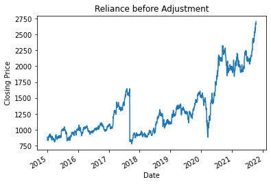
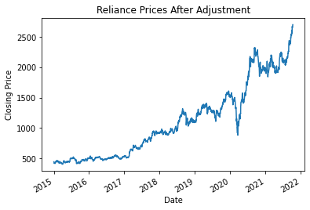

Module NSEDownload.stocks
Expand source code
import datetime
import pandas as pd
from NSEDownload.scraper import scrape_data, scrape_bonus_splits, scrape_symbol
pd.options.mode.chained_assignment = None
def get_data(symbol, full_data=False, start_date=None, end_date=None, series="EQ"):
"""
Function to get un-adjusted data for stocks
Args:
symbol (str): Scrip or Stock symbol in uppercase only
full_data (bool, optional): Parameter to get complete data since inception. Defaults to False.
start_date (datetime, optional): start date of date range in YYYY-MM-DD or DD-MM-YYYY format. Defaults to None.
end_date (datetime, optional): end date of date range in YYYY-MM-DD or DD-MM-YYYY format. Defaults to None.
series (str, optional): By default set to EQ, but can choose any series or All.
Raises:
ValueError: If no dates are provided/ Incorrect format of dates
ValueError: If start date > end date
Returns:
DataFrame: Data for stocksymbol for given date range
##Example
```
# Providing date range
df = stocks.get_data(stockSymbol='RELIANCE', start_date='15-9-2021', end_date='1-10-2021')
```
Output
```
| Date | Symbol | Series | Prev Close | Open Price | High Price | Low Price | Last Price | Close Price | Average Price | Total Traded Quantity | Turnover | No. of Trades | Deliverable Qty | % Dly Qt to Traded Qty |
|:--------------------|:---------|:---------|-------------:|-------------:|-------------:|------------:|-------------:|--------------:|----------------:|------------------------:|------------:|----------------:|------------------:|-------------------------:|
| 2021-09-15 | RELIANCE | EQ | 2368.45 | 2368.5 | 2395.75 | 2368.5 | 2379.4 | 2378.3 | 2380.39 | 4186300 | 9.96505e+09 | 168130 | 2310144 | 55.18 |
| 2021-09-16 | RELIANCE | EQ | 2378.3 | 2381.55 | 2436.75 | 2367 | 2424 | 2428.2 | 2408.55 | 6206657 | 1.49491e+10 | 214010 | 2473588 | 39.85 |
| 2021-09-17 | RELIANCE | EQ | 2428.2 | 2446 | 2455.85 | 2375.6 | 2387 | 2390.55 | 2410.13 | 16098099 | 3.87986e+10 | 278098 | 9460717 | 58.77 |
| 2021-09-20 | RELIANCE | EQ | 2390.55 | 2372.1 | 2418.35 | 2370 | 2391.85 | 2394.35 | 2398.57 | 5436385 | 1.30396e+10 | 171011 | 3042705 | 55.97 |
| 2021-09-21 | RELIANCE | EQ | 2394.35 | 2405 | 2416.6 | 2384 | 2400 | 2404.7 | 2401.93 | 4576111 | 1.09915e+10 | 149803 | 2365643 | 51.7 |
| 2021-09-22 | RELIANCE | EQ | 2404.7 | 2408 | 2442 | 2398.25 | 2430.8 | 2430.5 | 2426.47 | 5074612 | 1.23134e+10 | 179090 | 2811116 | 55.4 |
```
```
# Using full_data argument
df = stocks.get_data(stockSymbol='RELIANCE', full_data=True)
# Here ANGELONE isn't cross-checked as a correct scrip symbol
df = stocks.get_data(stockSymbol='ANGELONE', full_data=True, check_stockSymbol=False)
```
"""
symbol = symbol.replace('&', '%26')
symbol_count = scrape_symbol(symbol)
if full_data is True:
parsed_start_date = datetime.datetime.strptime('1-1-1992', "%d-%m-%Y")
parsed_end_date = datetime.datetime.today()
else:
if start_date is None or end_date is None:
raise ValueError("Provide start and end date.")
parsed_start_date = parse_date(start_date)
parsed_end_date = parse_date(end_date)
if parsed_start_date > parsed_end_date:
raise ValueError("Starting date is greater than end date.")
result = scrape_data(
parsed_start_date, parsed_end_date, 'stock', stock_symbol=symbol, symbol_count=symbol_count, series=series)
return result
def get_adjusted_data(symbol, df):
"""
Given a dataframe of data and symbol, the price is adjusted for events after 2010.
Args:
symbol (str): Scrip or Stock symbol in uppercase only
df (pandas dataframe): Data for given stock
Returns:
DataFrame: dataframe with adjusted data
##Example
```
from NSEDownload import stocks
df = stocks.get_data(stockSymbol = 'RELIANCE', start_date = '15-9-2015', end_date = '1-10-2021')
df = stocks.get_adjusted_data('RELIANCE', df)
```
Output
```
RELIANCE
BONUS on : 07-Sep-2017 and ratio is : 2.0
```
Adjusts can be easily check by plotting the closing price :
| Before Adjustment | After Adjustment |
| :--------: | :--------: |
|<img src = "Pre_adjustment.png"> |<img src = "Post_adjustment.png"> |
"""
headers = ['Open Price', 'High Price', 'Low Price',
'Last Price', 'Close Price', 'Average Price']
symbol = symbol.replace('&', '%26')
if df.empty:
print("Please check data. Dataframe is empty")
return df
df.index = pd.to_datetime(df.index)
df.sort_index(inplace=True)
try:
df = df.drop(['Prev Close'], axis=1)
except KeyError:
pass
ratio, dates = scrape_bonus_splits(symbol)
for index in range(len(dates)):
date = datetime.datetime.strptime(dates[index], '%d-%b-%Y')
changed_data = df.loc[df.index < date]
same_data = df.loc[df.index >= date]
for header_index in headers:
try:
changed_data.loc[:, header_index] = changed_data.loc[:, header_index] / ratio[index]
except TypeError:
pass
df = pd.concat([changed_data, same_data])
return df
def get_adjusted_stock(symbol, full_data=False, start_date=None, end_date=None):
"""
Returns adjusted stock in 1 step. Combines get_data and get_adjusted_data
Args:
symbol (str): Scrip or Stock symbol in uppercase only
full_data (bool, optional): Parameter to get complete data since inception. Defaults to False.
start_date (str, optional): start date of date range in YYYY-MM-DD or DD-MM-YYYY format. Defaults to None.
end_date (str, optional): end date of date range in YYYY-MM-DD or DD-MM-YYYY format. Defaults to None.
Returns:
DataFrame: DataFrame containing data for stocksymbol for given date range
##Example
```
from NSEDownload import stocks
df = stocks.get_adjusted_stock(stockSymbol='NMDC', full_data=True)
df = stocks.get_adjusted_stock(stockSymbol='INFY', start_date="2010-11-12", end_date="2011-11-12")
```
"""
df = get_data(symbol, full_data, start_date, end_date)
df = get_adjusted_data(symbol, df)
return df
def parse_date(text):
"""
Parses date in either YYYY-MM-DD or DD-MM-YYYY format
"""
for fmt in ('%Y-%m-%d', '%d-%m-%Y'):
try:
return datetime.datetime.strptime(text, fmt)
except ValueError:
pass
raise ValueError('Dates should be in YYYY-MM-DD or DD-MM-YYYY format')Functions
def get_adjusted_data(symbol, df)-
Given a dataframe of data and symbol, the price is adjusted for events after 2010.
Args
symbol:str- Scrip or Stock symbol in uppercase only
df:pandas dataframe- Data for given stock
Returns
DataFrame- dataframe with adjusted data
Example
from NSEDownload import stocks df = stocks.get_data(stockSymbol = 'RELIANCE', start_date = '15-9-2015', end_date = '1-10-2021') df = stocks.get_adjusted_data('RELIANCE', df)Output
RELIANCE BONUS on : 07-Sep-2017 and ratio is : 2.0Adjusts can be easily check by plotting the closing price :
Before Adjustment After Adjustment   Expand source code
def get_adjusted_data(symbol, df): """ Given a dataframe of data and symbol, the price is adjusted for events after 2010. Args: symbol (str): Scrip or Stock symbol in uppercase only df (pandas dataframe): Data for given stock Returns: DataFrame: dataframe with adjusted data ##Example ``` from NSEDownload import stocks df = stocks.get_data(stockSymbol = 'RELIANCE', start_date = '15-9-2015', end_date = '1-10-2021') df = stocks.get_adjusted_data('RELIANCE', df) ``` Output ``` RELIANCE BONUS on : 07-Sep-2017 and ratio is : 2.0 ``` Adjusts can be easily check by plotting the closing price : | Before Adjustment | After Adjustment | | :--------: | :--------: | |<img src = "Pre_adjustment.png"> |<img src = "Post_adjustment.png"> | """ headers = ['Open Price', 'High Price', 'Low Price', 'Last Price', 'Close Price', 'Average Price'] symbol = symbol.replace('&', '%26') if df.empty: print("Please check data. Dataframe is empty") return df df.index = pd.to_datetime(df.index) df.sort_index(inplace=True) try: df = df.drop(['Prev Close'], axis=1) except KeyError: pass ratio, dates = scrape_bonus_splits(symbol) for index in range(len(dates)): date = datetime.datetime.strptime(dates[index], '%d-%b-%Y') changed_data = df.loc[df.index < date] same_data = df.loc[df.index >= date] for header_index in headers: try: changed_data.loc[:, header_index] = changed_data.loc[:, header_index] / ratio[index] except TypeError: pass df = pd.concat([changed_data, same_data]) return df def get_adjusted_stock(symbol, full_data=False, start_date=None, end_date=None)-
Returns adjusted stock in 1 step. Combines get_data and get_adjusted_data
Args
symbol:str- Scrip or Stock symbol in uppercase only
full_data:bool, optional- Parameter to get complete data since inception. Defaults to False.
start_date:str, optional- start date of date range in YYYY-MM-DD or DD-MM-YYYY format. Defaults to None.
end_date:str, optional- end date of date range in YYYY-MM-DD or DD-MM-YYYY format. Defaults to None.
Returns
DataFrame- DataFrame containing data for stocksymbol for given date range
Example
from NSEDownload import stocks df = stocks.get_adjusted_stock(stockSymbol='NMDC', full_data=True) df = stocks.get_adjusted_stock(stockSymbol='INFY', start_date="2010-11-12", end_date="2011-11-12")Expand source code
def get_adjusted_stock(symbol, full_data=False, start_date=None, end_date=None): """ Returns adjusted stock in 1 step. Combines get_data and get_adjusted_data Args: symbol (str): Scrip or Stock symbol in uppercase only full_data (bool, optional): Parameter to get complete data since inception. Defaults to False. start_date (str, optional): start date of date range in YYYY-MM-DD or DD-MM-YYYY format. Defaults to None. end_date (str, optional): end date of date range in YYYY-MM-DD or DD-MM-YYYY format. Defaults to None. Returns: DataFrame: DataFrame containing data for stocksymbol for given date range ##Example ``` from NSEDownload import stocks df = stocks.get_adjusted_stock(stockSymbol='NMDC', full_data=True) df = stocks.get_adjusted_stock(stockSymbol='INFY', start_date="2010-11-12", end_date="2011-11-12") ``` """ df = get_data(symbol, full_data, start_date, end_date) df = get_adjusted_data(symbol, df) return df def get_data(symbol, full_data=False, start_date=None, end_date=None, series='EQ')-
Function to get un-adjusted data for stocks
Args
symbol:str- Scrip or Stock symbol in uppercase only
full_data:bool, optional- Parameter to get complete data since inception. Defaults to False.
start_date:datetime, optional- start date of date range in YYYY-MM-DD or DD-MM-YYYY format. Defaults to None.
end_date:datetime, optional- end date of date range in YYYY-MM-DD or DD-MM-YYYY format. Defaults to None.
series:str, optional- By default set to EQ, but can choose any series or All.
Raises
ValueError- If no dates are provided/ Incorrect format of dates
ValueError- If start date > end date
Returns
DataFrame- Data for stocksymbol for given date range
Example
# Providing date range df = stocks.get_data(stockSymbol='RELIANCE', start_date='15-9-2021', end_date='1-10-2021')Output
| Date | Symbol | Series | Prev Close | Open Price | High Price | Low Price | Last Price | Close Price | Average Price | Total Traded Quantity | Turnover | No. of Trades | Deliverable Qty | % Dly Qt to Traded Qty | |:--------------------|:---------|:---------|-------------:|-------------:|-------------:|------------:|-------------:|--------------:|----------------:|------------------------:|------------:|----------------:|------------------:|-------------------------:| | 2021-09-15 | RELIANCE | EQ | 2368.45 | 2368.5 | 2395.75 | 2368.5 | 2379.4 | 2378.3 | 2380.39 | 4186300 | 9.96505e+09 | 168130 | 2310144 | 55.18 | | 2021-09-16 | RELIANCE | EQ | 2378.3 | 2381.55 | 2436.75 | 2367 | 2424 | 2428.2 | 2408.55 | 6206657 | 1.49491e+10 | 214010 | 2473588 | 39.85 | | 2021-09-17 | RELIANCE | EQ | 2428.2 | 2446 | 2455.85 | 2375.6 | 2387 | 2390.55 | 2410.13 | 16098099 | 3.87986e+10 | 278098 | 9460717 | 58.77 | | 2021-09-20 | RELIANCE | EQ | 2390.55 | 2372.1 | 2418.35 | 2370 | 2391.85 | 2394.35 | 2398.57 | 5436385 | 1.30396e+10 | 171011 | 3042705 | 55.97 | | 2021-09-21 | RELIANCE | EQ | 2394.35 | 2405 | 2416.6 | 2384 | 2400 | 2404.7 | 2401.93 | 4576111 | 1.09915e+10 | 149803 | 2365643 | 51.7 | | 2021-09-22 | RELIANCE | EQ | 2404.7 | 2408 | 2442 | 2398.25 | 2430.8 | 2430.5 | 2426.47 | 5074612 | 1.23134e+10 | 179090 | 2811116 | 55.4 |# Using full_data argument df = stocks.get_data(stockSymbol='RELIANCE', full_data=True) # Here ANGELONE isn't cross-checked as a correct scrip symbol df = stocks.get_data(stockSymbol='ANGELONE', full_data=True, check_stockSymbol=False)Expand source code
def get_data(symbol, full_data=False, start_date=None, end_date=None, series="EQ"): """ Function to get un-adjusted data for stocks Args: symbol (str): Scrip or Stock symbol in uppercase only full_data (bool, optional): Parameter to get complete data since inception. Defaults to False. start_date (datetime, optional): start date of date range in YYYY-MM-DD or DD-MM-YYYY format. Defaults to None. end_date (datetime, optional): end date of date range in YYYY-MM-DD or DD-MM-YYYY format. Defaults to None. series (str, optional): By default set to EQ, but can choose any series or All. Raises: ValueError: If no dates are provided/ Incorrect format of dates ValueError: If start date > end date Returns: DataFrame: Data for stocksymbol for given date range ##Example ``` # Providing date range df = stocks.get_data(stockSymbol='RELIANCE', start_date='15-9-2021', end_date='1-10-2021') ``` Output ``` | Date | Symbol | Series | Prev Close | Open Price | High Price | Low Price | Last Price | Close Price | Average Price | Total Traded Quantity | Turnover | No. of Trades | Deliverable Qty | % Dly Qt to Traded Qty | |:--------------------|:---------|:---------|-------------:|-------------:|-------------:|------------:|-------------:|--------------:|----------------:|------------------------:|------------:|----------------:|------------------:|-------------------------:| | 2021-09-15 | RELIANCE | EQ | 2368.45 | 2368.5 | 2395.75 | 2368.5 | 2379.4 | 2378.3 | 2380.39 | 4186300 | 9.96505e+09 | 168130 | 2310144 | 55.18 | | 2021-09-16 | RELIANCE | EQ | 2378.3 | 2381.55 | 2436.75 | 2367 | 2424 | 2428.2 | 2408.55 | 6206657 | 1.49491e+10 | 214010 | 2473588 | 39.85 | | 2021-09-17 | RELIANCE | EQ | 2428.2 | 2446 | 2455.85 | 2375.6 | 2387 | 2390.55 | 2410.13 | 16098099 | 3.87986e+10 | 278098 | 9460717 | 58.77 | | 2021-09-20 | RELIANCE | EQ | 2390.55 | 2372.1 | 2418.35 | 2370 | 2391.85 | 2394.35 | 2398.57 | 5436385 | 1.30396e+10 | 171011 | 3042705 | 55.97 | | 2021-09-21 | RELIANCE | EQ | 2394.35 | 2405 | 2416.6 | 2384 | 2400 | 2404.7 | 2401.93 | 4576111 | 1.09915e+10 | 149803 | 2365643 | 51.7 | | 2021-09-22 | RELIANCE | EQ | 2404.7 | 2408 | 2442 | 2398.25 | 2430.8 | 2430.5 | 2426.47 | 5074612 | 1.23134e+10 | 179090 | 2811116 | 55.4 | ``` ``` # Using full_data argument df = stocks.get_data(stockSymbol='RELIANCE', full_data=True) # Here ANGELONE isn't cross-checked as a correct scrip symbol df = stocks.get_data(stockSymbol='ANGELONE', full_data=True, check_stockSymbol=False) ``` """ symbol = symbol.replace('&', '%26') symbol_count = scrape_symbol(symbol) if full_data is True: parsed_start_date = datetime.datetime.strptime('1-1-1992', "%d-%m-%Y") parsed_end_date = datetime.datetime.today() else: if start_date is None or end_date is None: raise ValueError("Provide start and end date.") parsed_start_date = parse_date(start_date) parsed_end_date = parse_date(end_date) if parsed_start_date > parsed_end_date: raise ValueError("Starting date is greater than end date.") result = scrape_data( parsed_start_date, parsed_end_date, 'stock', stock_symbol=symbol, symbol_count=symbol_count, series=series) return result def parse_date(text)-
Parses date in either YYYY-MM-DD or DD-MM-YYYY format
Expand source code
def parse_date(text): """ Parses date in either YYYY-MM-DD or DD-MM-YYYY format """ for fmt in ('%Y-%m-%d', '%d-%m-%Y'): try: return datetime.datetime.strptime(text, fmt) except ValueError: pass raise ValueError('Dates should be in YYYY-MM-DD or DD-MM-YYYY format')